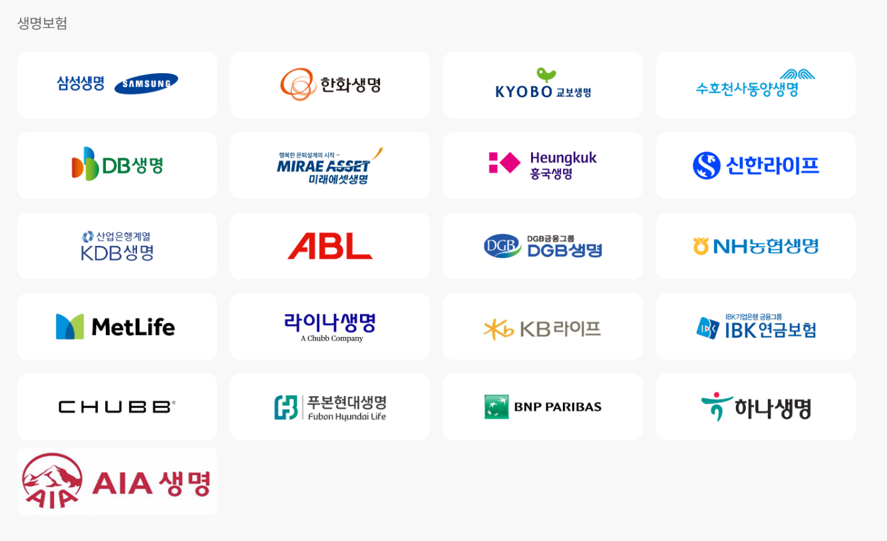
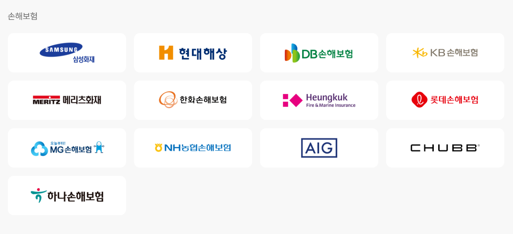
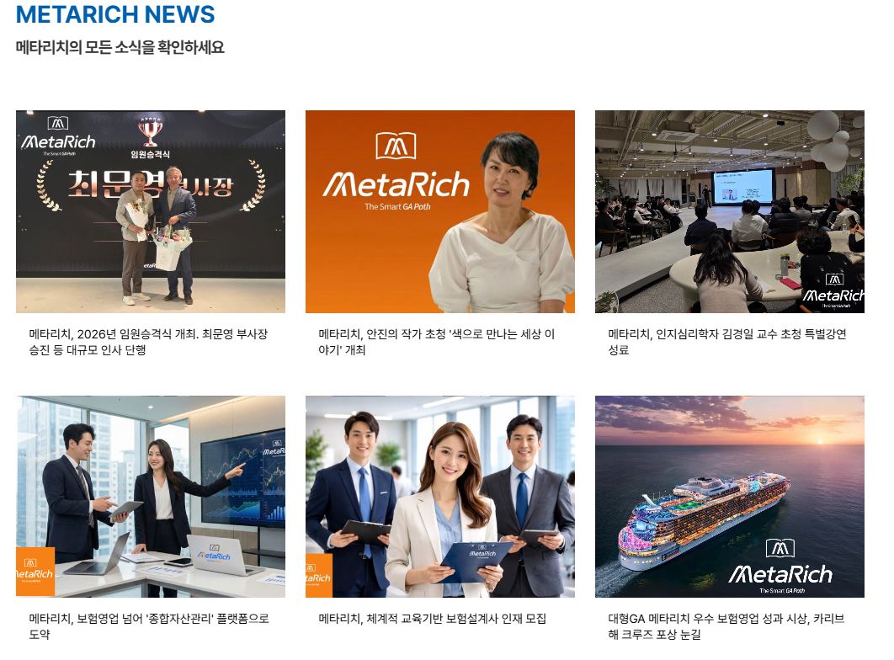
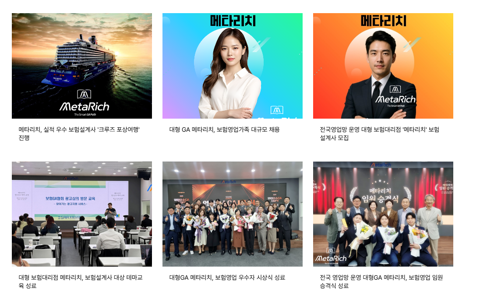

보험대리점 등록
THE SMART GA PATH
고객과 전문가가
함께 성장하는 GA.
메타리치는 여러 보험사의 상품을 비교·분석하고, 고객에게 필요한 보장을 설계하는 보험대리점입니다. 올바른 정보와 체계적인 교육을 바탕으로 더 나은 금융 선택을 돕습니다.
주식회사 메타리치
보험대리점 등록번호 제 2023070016호국내·외 보험사 상품 비교
현재 교육·영업·고객지원 운영
원주·이천 주요 거점
BRAND IDENTITY
보험을 넘어,
더 건강한 미래를 만듭니다.
대한민국 대표 GA
특정 보험사에 소속되지 않고 여러 보험사의 상품을 비교·분석하여 고객에게 필요한 보장을 설계합니다.
고객 중심 경영
고객 정보에 기초한 의사결정을 돕고 피해 예방 제도를 설계하며 만족도 높은 상담을 위해 노력합니다.
사회적 책임
건강한 미래를 위한 문화·예술·스포츠·환경보호와 청년 지원 등 사회공헌의 가치를 이어갑니다.
WHAT WE SUPPORT
현장에서 성장할 수 있도록
실질적으로 지원합니다.
체계적인 교육
신입·경력 설계사를 위한 기초 과정부터 상품·상담·고객관리까지 단계별 실무 교육을 운영합니다.
영업 활동 지원
상담에 필요한 자료와 업무 기준, 현장 중심의 코칭을 제공해 안정적인 활동을 돕습니다.
고객 관리 지원
보험금 청구, 계약 유지, 보장 점검 등 고객에게 필요한 사후관리 흐름을 함께 지원합니다.
소비자보호·내부통제
금융소비자의 권리와 정보의 시의성을 지키기 위한 기준·절차·교육 체계를 운영합니다.
INSURANCE PARTNERS
폭넓은 제휴사 안에서
필요한 보장을 비교합니다.
아래는 제공된 자료 기준 제휴 현황 일부이며, 실제 취급 상품과 제휴 현황은 상담 시점에 확인합니다.


METARICH NEWS
메타리치의 활동과
새로운 소식을 확인하세요.


임원 승격식과 보험영업 우수자 시상
조직의 성장에 기여한 구성원을 격려하고 우수 활동 사례를 함께 나눕니다.
보험설계사 대상 테마교육과 특별강연
현장 역량과 고객 상담 품질 향상을 위한 교육 프로그램을 지속적으로 운영합니다.
체계적 교육 기반의 인재 모집
신입부터 경력 설계사까지 성장을 지원하는 교육·영업 환경을 안내합니다.
주식회사 메타리치
대표자 김상배 · 사업자등록번호 126-86-82797 · 보험대리점 등록번호 제 2023070016호
본사 경기 과천시 양지마을로 22 2층 (과천동) · 대표전화 02-503-7175